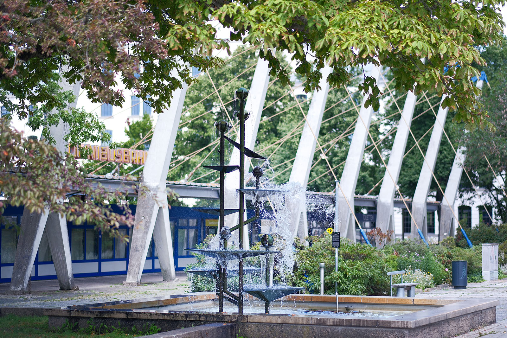
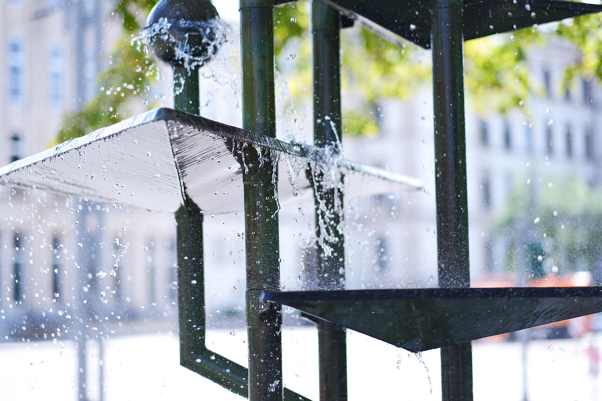
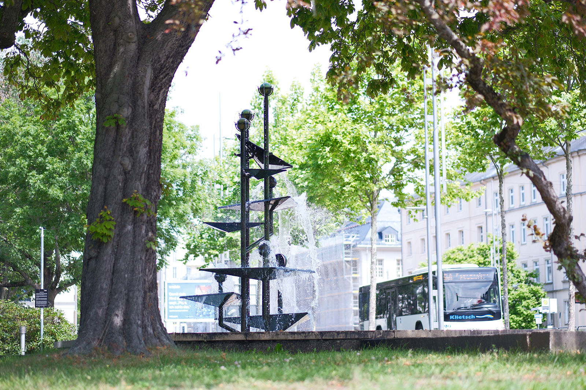
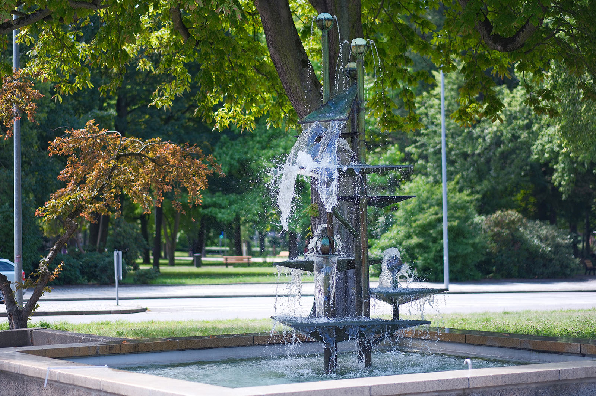
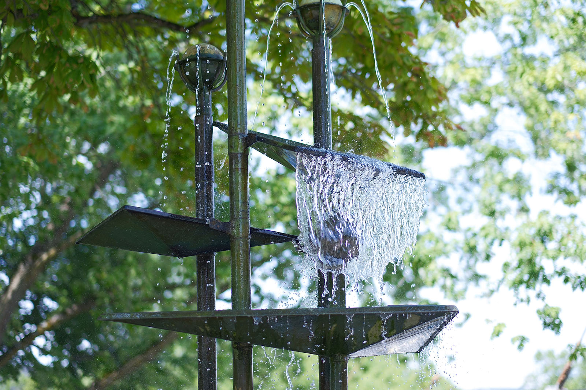
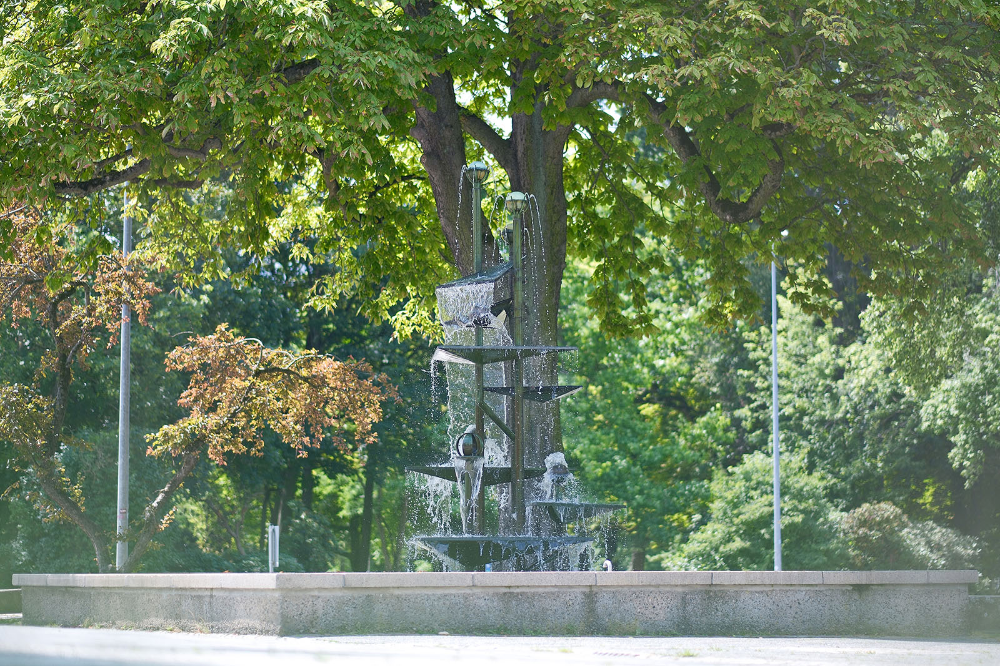

Recherche und Werkbeschreibung: Roman Pilz. Text und Fotografien wechseln sich wie in einem Magazin ab. Ein Klick auf ein Bild öffnet die Großansicht.
Die Brunnenplastik von Johannes Belz kann mit gutem Grund als das älteste "kinetische" Kunstwerk in Chemnitz bezeichnet werden – eingeweiht im Jahr 1968 ist die Bewegung einzelner Teile der abstrakten Metallarbeit integraler Bestandteil des Entwurfs.
Es verwundert, dass in der Industrie- und Maschinenbaustadt Chemnitz nicht viel mehr Beispiele dieser im Wesentlichen im 20. Jahrhundert entstandenen Kunstrichtung präsent sind – das politisch beförderte Leitbild des (sozialistischen) Realismus wird dabei sicher eine Rolle gespielt haben. Wegbereiter dieser Spielart der modernen Objektkunst war der Konzeptkünstler und Dadaist Marcel Duchamp, der mit seinen Readymades Gebrauchsgegenstände für die Kunst umwidmete. Auch der russische Konstruktivismus legte mit seiner Wertschätzung für die Ästhetik der "Maschine" wichtige Grundlagen.
Das Feld der kinetischen Kunst im eigentlichen Sinne entfalte sich vor allem in der Nachkriegszeit, in den 1950er- und 60er-Jahren. Im Zuge der allgemeinen Tendenz zur Abstraktion in der westlichen Kunst widmeten sich Künstler mit großer Faszination den physikalischen Grundlagen ihrer Materialien und der Wahrnehmung an sich – oft unter dem Vorzeichen des "Neubeginns" nach den Verheerungen des Nationalismus und Faschismus. Mit spielerischer Neugier fanden nun auch mechanische Bauteile jeglicher Art den Weg in die Kunst – und folgerichtig wurden diese dann auch in Bewegung gesetzt.
Der Schweizer Jean Tinguely baute absurde Maschinen und der Amerikaner Alexander Calder "erfand" das künstlerische Mobile. Die eng mit der kinetischen Kunst verschwisterte Op-Art erweitert und kombiniert das Feld mechanischer (Natur-)Kräfte dann noch um optische Effekte des Lichts als Essenz des Sehens. Weder der Prozess der Entstehung des Kunstwerks noch jener der Wahrnehmung ist dabei statisch – die Bewegung des Künstlers und des Betrachters wird immer mitgedacht.
Belz, der nach seiner Ausbildung in Dresden noch weitestgehend naturalistisch arbeitete, wurde durch eine Ausstellung des bedeutenden Berliner Metallgestalters Fritz Kühn (1910–1967) stark zur abstrakten Formgestaltung hin angeregt. Fritz' Brunnen-Entwürfe für den Fußgängerboulevard in Magdeburg aus dem Jahr 1964, mit Kugel- und Kelchbrunnen, können durchaus als Vorbild für den Klapperbrunnen gesehen werden. Erste Entwurfszeichnungen für den Chemnitzer Brunnen von Belz, die in der Neuen Sächsischen Galerie Chemnitz belegt sind, zeigen noch statische Kugel- und Schalenformen.
Doch Belz ging anschließend einen Schritt weiter: Mit dem Klappmechanismus fügt er der Brunnenplastik ein ganz eigenes Element hinzu. Die Erzählung aus der Familie des Künstlers geht so, dass der Künstler bei einem Urlaub an der Spree wohl beobachtete, wie sich die fächerförmigen Blätter des Frauenmantels bei einem Regenschauer mit Wasser füllten und, sobald das kritische Gewicht erreicht war, spontan über die Blattkanen entleerten. Diese Grundpinzp übertrug er auf einige der Wasserschalen des Wasserspiels für den Omnibusbahnhof.

Wer die etwa 4,5 Meter hoch aus einem quadratischen Basin aufragende Plastik betrachtet, wird nur entfernt an das Vorbild aus dem Reich der Pflanzen denken. Vier Rohre steigen senkrecht aus dem Wasser auf und verzweigen sich an drei Stellen zu insgesamt sieben "Trieben", die an ihrer Spitze von verschiedenen Kugelformen gekrönt werden: Die drei höchsten "Knospen" sind umlaufend mit sieben kleinen Metallröhrchen verziert, die entsprechend des Wasserdrucks einen Kranz dünner, parabelförmiger Wasserstrahlen entlassen.
Darunter stehen drei weitere Kugeln, die oben sowie an ihrer Äquatorlinie durchbrochen sind und das Wasser entsprechend in einer zentralen Krone und einer Art wild sprudelndem Wasserrock herabfallen lassen. Eine einzelne Kugel ist lanzettenförmig ausgespart – sie lässt das Wasser in ihrem Inneren ruhiger entweichen und über ein schmales, tellerartiges "Kelchblatt" hinunter ins Becken strömen.

Nur drei der insgesamt sieben tetraederförmigen Schalen sind beweglich an jeweils zwei Schenkeln gelagert. Die Spitze des Dreiecks liegt, während sich die flachen Schalen füllen, auf einem nach innen gerichteten, aus den Sprossachsen auskragenden Stoßdämpfer auf. Da die unten liegende Spitze des Tetraeders, also der tiefste Punkt der Schale, ein wenig außerhalb der gedachten Achse der Lagerung liegt, verschiebt sich mit der einseitigen Gewichtszunahme durch das Wasser der Schwerpunkt des "Blattes"
und der Wasserschwall entleert sich ruckartig entlang einer langen Kante nach außen. Diese Entlastung verlagert den Schwerpunkt nun schnell wieder nach innen, zur fein ausbalancierten, waagerechten Ruheposition. In diesem Moment entsteht kurzzeitig das "Klappergeräusch" des Brunnens, nämlich dann, wenn die Spitze zyklisch wieder zurück auf ihr Lager schlägt und ein wenig nachfedert.

Mehr als durch Klappern wird der Klappen-Brunnen geräuschlich durch das vielfältige Sprudeln und Rauschen des Wassers geprägt. Nur wenn die Wassertechnik abgestellt ist, ist wirklich Ruhe und kleine Vögel nutzen die Wasserflächen der Schalen sogar für ein kleines Bad. Ob Belz tatsächlich zu den modernen Vertretern der kinetischen Kunst Beziehungen hatte, ist nicht sicher – sicher aber steht er mit seinem effektvollen und bei der Chemnitzer Bevölkerung beliebten Kunstwerk in der Tradition der älteren Wasserkunst des Barock: Schon damals wurden mechanische Theater, Pfeifen und auf Wasserstrahlen tanzende Objekte zur reinen Freude und Unterhaltung kunstvoller Gärten erdacht.
Wer weitere Vertreter der kinetischen Kunst im engeren Sinne sehen will, kann die in jüngerer Zeit nach Chemnitz gekommenen Werke des Amerikaners George Rickey im Garten des Museum Gunzenhauser oder die Kunst des in Chemnitz wirkenden Künstlers Rolf Lieberknecht in der Stadthalle aufsuchen.

